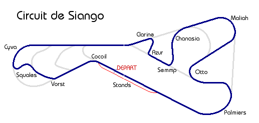

|

|

|
CIRCUIT
|
Le
circuit de Siango est un circuit modulaire. Le tracé principal, en
bleu sur le plan, est celui utilisé pour les grandes courses comme
la Formule Z ou les 24 Heures de Siango. Les multiples bretelles de raccordement,
en gris, permettent toutefois de mettre en place de multiples variantes du
tracé.

Longueur
du tracé : 5411 mètres
|